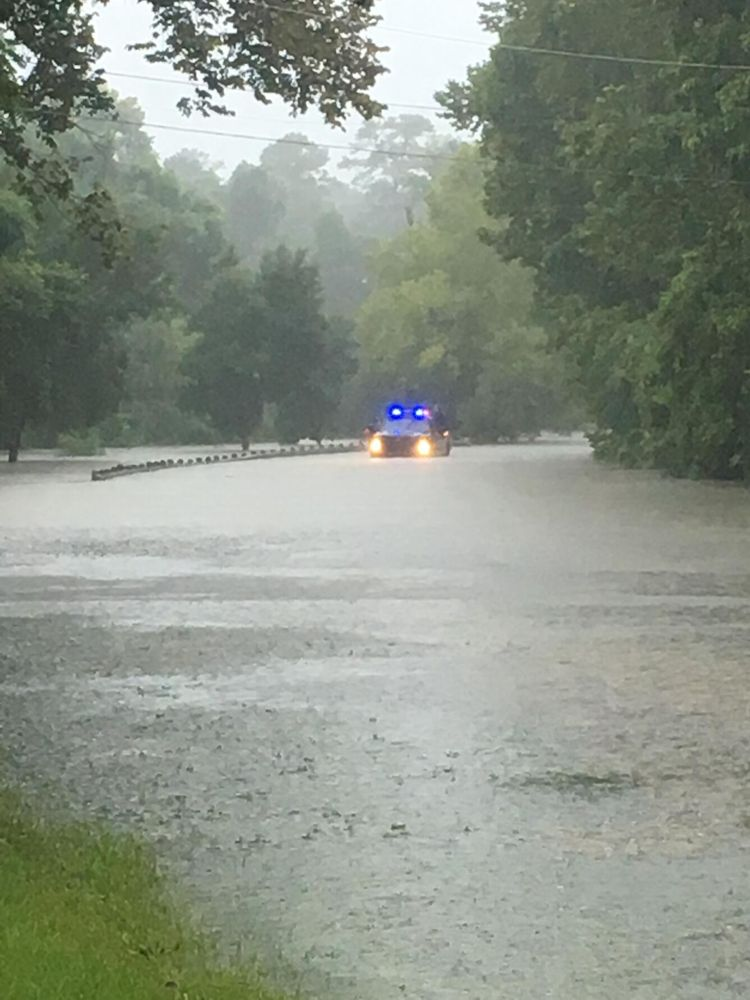
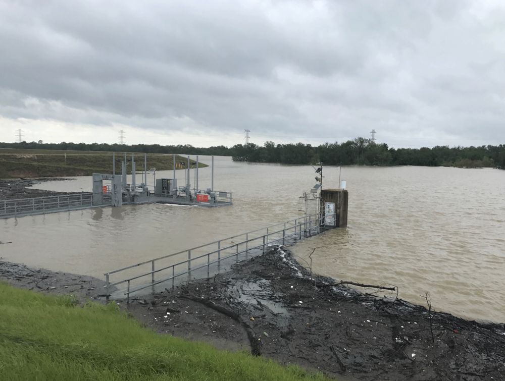

Harvey field photos
USGS photographed these two Houston sites outside the Meyerland replay area.
Buffalo Bayou at Piney Point

USGS field photograph · public domain
Addicks Reservoir


USGS photographed these two Houston sites outside the Meyerland replay area.

USGS field photograph · public domain
